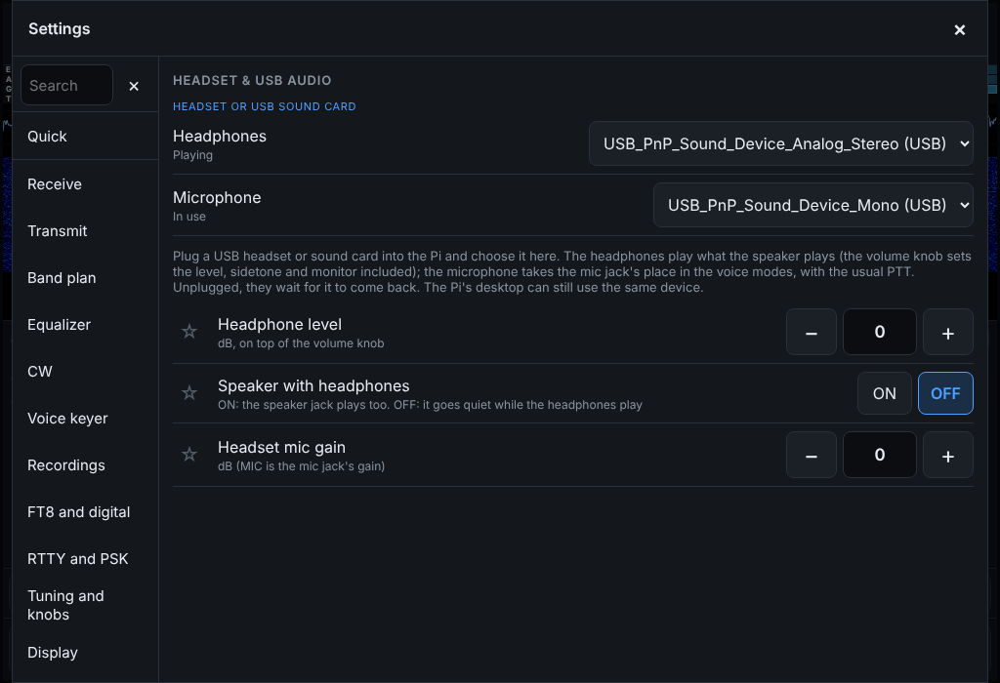

Headset and USB audio#
A USB headset or USB sound card plugged into the Pi can be the radio's headphones, its microphone, or both. Choose them under More → Headset & USB audio.

| Setting | Console name | Default | Values | What it does |
|---|---|---|---|---|
| Headphones | PHONES | OFF | OFF or an output | Plays what the speaker plays on that output |
| Headphone level | PHONESLVL | 0 | −20…20 dB | Added to the volume knob's level |
| Speaker with headphones | PHONESSPK | OFF | ON, OFF | OFF: the speaker jack goes quiet while the headphones play |
| Microphone | HSMIC | OFF | OFF or an input | Takes the mic jack's place for transmitting |
| Headset mic gain | HSMICGAIN | 0 | −20…30 dB | The headset mic's gain (MIC is the mic jack's) |
Headphones. They get exactly what the speaker would: the receiver, the
CW sidetone and the voice monitor (TXMON), at the speaker's level (the
volume knob, or the fixed sidetone level while sending), plus Headphone
level. The receiver's audio is blanked around each transmit/receive switch
the same way, so there are no clicks.
Microphone. In the voice modes (USB, LSB, AM, FM, RADE) the headset's microphone replaces the mic jack. Key the radio as usual: the mic's PTT, the PTT button, CAT or the console. In the digital modes the transmit audio still comes from the program playing into jeSDR Transmit.
Choosing the device. The lists show every output and input in the Pi's PipeWire session, USB devices first (marked (USB)). The settings remember the device, not a port, so:
- Unplugged, it shows Not connected and the speaker and mic jack take over. Plugged back in, it carries on by itself.
- The radio never sends its audio to another device instead, so the headphones' audio can never reach jeSDR Transmit.
- The Pi's desktop can still use the same headset; PipeWire mixes them.
On the console, headset lists the devices with numbers
and shows what is in use; headset phones 1 or headset mic 1 chooses one,
and headset phones off turns the headphones off.
Choosing a headset#
Most USB headsets and USB sound cards work without drivers: look for USB Audio Class 1 or 2 ("plug and play", "works with Chromebook / Linux"). A wireless headset with its own USB dongle works the same way. Very power-hungry devices can upset the Pi; a powered USB hub helps. Models sBitx owners have reported working include the Logitech H390, H540 and H600, Jabra Evolve 20/30 II/40, Poly (Plantronics) Blackwire 3210/5220, EPOS Sennheiser SC 60 and SC 165 USB, Microsoft LifeChat LX-3000, the EKSA E1000 and the Sabrent USB stereo adapter (for a wired headset or microphone).
If it doesn't work#
- Nothing in the lists: jeSDR finds devices through the radio user's
PipeWire session.
statusshows programs' audio: PipeWire: …; if it says it is waiting, see Troubleshooting. - Too quiet or too loud: use Headphone level and Headset mic gain. The device's own volume (on the headset, or in the desktop's sound settings) applies too.
- A slight delay compared to the speaker: PipeWire adds about 20–30 ms. For CW at high speed the speaker jack has the shortest sidetone delay.